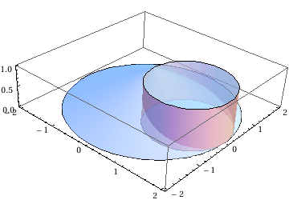

東京大学 2003年 理科 第3問
問題
x y z空間に置いて、平面z=0上の原点を中心とする半径2の円を底面とし、点(0,0,1)を頂点とする円錐をAとする。
次に、平面z=0上の点(1,0,0)を中心とする半径1の円をH、平面z=1上の点(1,0,1)を中心とする半径1の円をKとする。HとKを2つの断面とする円柱をBとする。
円錐Aと円柱Bの共通部分をCとする。
0≤t≤1を満たす実数tに対し、平面z=tによるCの切り口の面積をS(t)とおく。
(1) とする。t=1-cos θのとき、S(t)をθで表せ。
(2) Cの体積を求めよ。
解答
(1)
円錐Aおよび円筒Bを図示すると下図。

z=tの平面において、円錐Aの切り口は、円柱Bの切り口はで表されるから、共通部分の面積は
| \[Piecewise] |
|
およびcos θ=0のときも含めて、答えは
(2)
S(t)を直接tで積分してCの体積を得る。
補足・感想
IntegrateとBooleの組み合わせは強力。